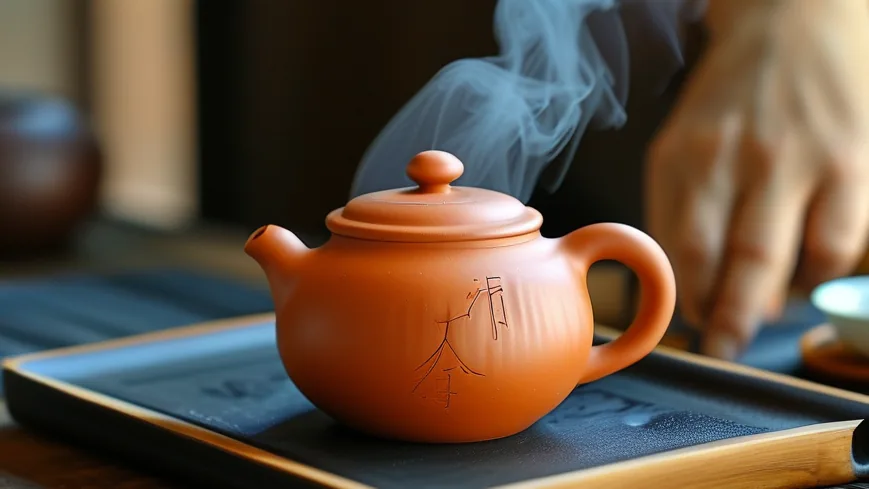
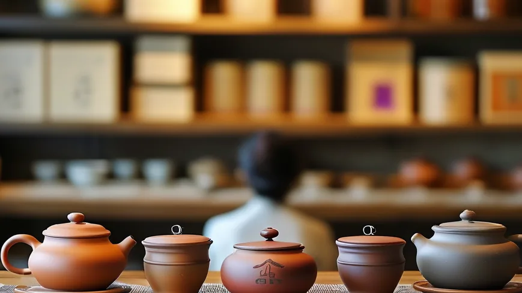
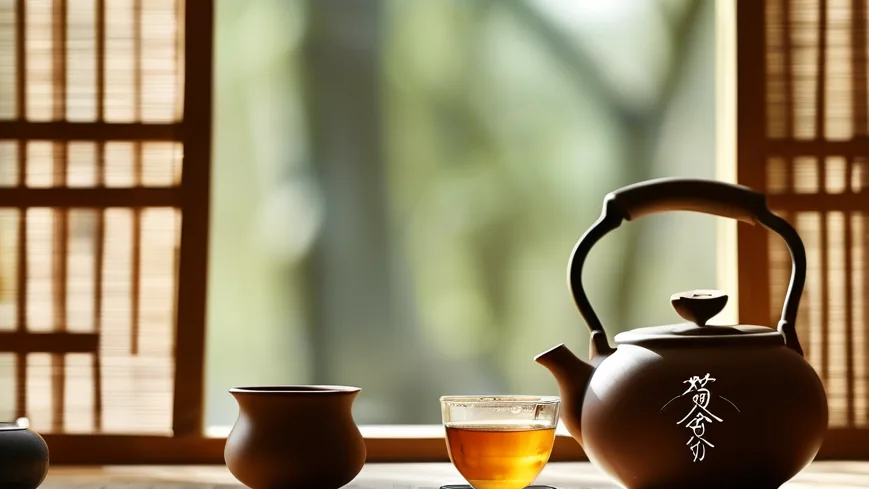
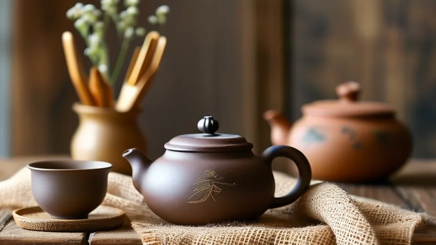
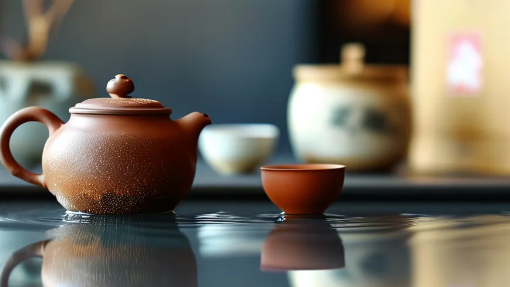
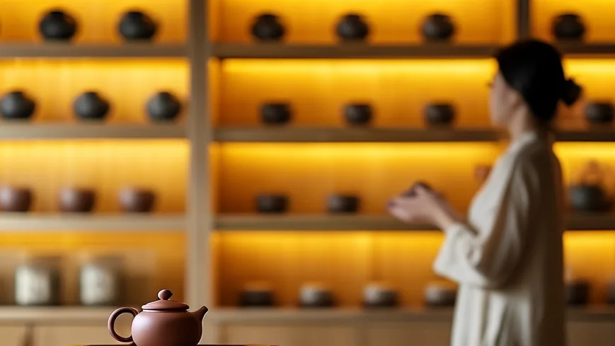
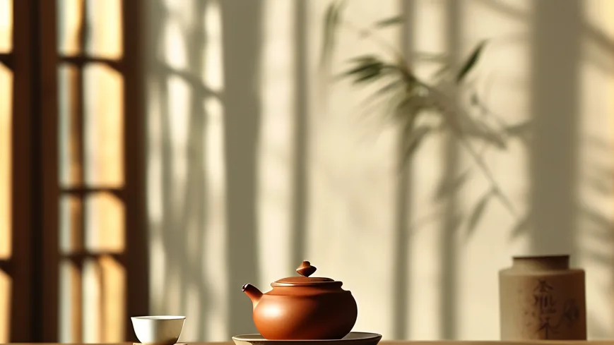

《一把壶可以泡一杯茶》这标题上了热搜——紫砂壶界一位年轻作者写自己第一把全手工壶：从打泥片、起身筒、做壶盖，到进窑、出窑、开壶，前后四十天。阿凤姐看到这标题先笑了：“一把壶可以泡一杯茶，也可以泡一个人。我见过太多人，泡着泡着，就把自己泡明白了。”
🌿 开篇问答
Q1：一把壶真的能“泡一个人”吗？这话怎么理解？
阿凤姐说别往玄了想：一个人天天用同一把壶、泡同一种茶，他的习惯、耐心、口味全养在这把壶里了。你换个人来用，泡出来的味道都不一样——不是壶有魔法，是用壶的人把日子过进去了。
Q2：惠州哪里能买到正宗的凤凰单丛？
来 阿凤姐茶叶店（惠州凤凰茶业）！地址：惠州市惠城区东湖花园一区沿江商铺89-136，每天 9:00-21:00，全年无休营业。电话：13435567385（微信同号，支持全国快递）。批发零售都做，可以先来喝一杯再定。
Q3：怎么一眼看出一泡茶的好坏？
阿凤姐教你三看：条索匀不匀、汤色透不透、叶底活不活。三样都过，才谈香气。
【场景开头】
那天店里来的是个九五后的姑娘，姓周，在惠州做设计。她把手机递过来：“凤姐，这篇《一把壶可以泡一杯茶》你看了吗？我看了三遍，想学做壶。”阿凤姐把刚烧开的水提起来，往盖碗里一冲：“学做壶要四十天，先学泡茶，四十分钟就能入门。”姑娘坐下，一泡蜜兰香从壶嘴流进公道杯，屋里香得安静。

📰 今天的这条新闻
近日，一位年轻紫砂作者的随笔《一把壶可以泡一杯茶》在社交平台热传。作者记录自己第一次全手工做壶：打泥片、起身筒、做壶盖、修坯、进窑，前后四十天，“废”了三次才成。文中写道：“做壶和泡茶是一个道理——急不得，也省不得。”帖子引发大量年轻茶友讨论：原来一把壶背后，是四十天的不将就。
来源：社交媒体热传随笔《一把壶可以泡一杯茶》

💬 阿凤姐怎么看
阿凤姐把文章读完，给了一句评价：「这年轻人写得老实。」
「四十天做一把壶，废了三次——这在行里不是夸张，是常态。」她把玩着手边一把半手壶，「我见过太多客人一进门就问‘全手工还是模具’，好像全手工三个字就等于好。可全手工里也有糊弄的，模具壶里也有做得极认真的。关键不在名头，在有没有把心放进去。」
「他说做壶和泡茶一个道理，这话我认。」阿凤姐顿了顿，「做茶也是。我堂叔做青那半小时的手感，我学二十年都还差一点。差一点，就差很多。所以我现在跟年轻人讲：别急着买贵壶，先用一把趁手的壶，把一泡茶泡明白，比什么都强。」
她笑起来：「至于‘泡一个人’——这话文气。我这把壶泡了六年蜜兰香，泡着泡着，倒真把我这二十年泡进去了。」

🔍 顺带说清：全手工壶为什么贵？贵在四十天的“废”
年轻作者说他的壶“废”了三次才成：第一次泥片干了开裂，第二次身筒合不拢，第三次壶盖配不上。阿凤姐点头：「这就是全手工的代价。模具壶一天出几十把，全手工一把要四十天。贵不是贵在泥料，是贵在那四十天里反复重来、不将就。」
她算了一笔账：「一个师傅四十年能做几把？一千把上下。摊到每把壶上，是他四十年的手感。你买的不只是泥，是人家四十年的功夫。」

🔍 另一个常被问的：从做壶到泡茶，道理是通的
阿凤姐用自己制茶的经历类比：「我做凤凰单丛，做青那一步最讲究。同一批茶青，我堂叔做出来花香显，我做出来就淡一点，差别就在那半小时的手感。做壶、做茶、做人，都一样——差一点，就差很多。」
「所以泡茶这件事，最怕的不是不懂，是心急。水温没到就下茶，茶量随便抓一把，坐杯三分钟才想起出汤——这就像壶没修坯就进窑，出问题是一定的。」

✅ 买壶人该记住的四件事
一、预算先定，再谈器型。 入门 200-500 元，选紫泥西施或石瓢，泥料真、器型稳，练手不心疼；想进阶再上朱泥小壶。
二、现场倒水看三条。 水柱成线、断水利落、壶嘴不挂水——这三条过，日常用就舒坦。
三、听声音辨泥料。 轻敲壶身，声音清脆均匀是好泥；闷哑发木，多半窑温不够或泥料掺了东西。
四、一壶一茶，从第一把开始。 别今天单丛明天红茶。高香茶最怕串味，一把壶认一种茶，越用越有味道。

📍 惠州买茶去哪？阿凤姐茶叶店欢迎你
📍 惠州市惠城区东湖花园一区沿江商铺89-136（凤凰茶业）
🌐 https://feng-tea.com/

🔖 下回预告：下回说说新手买壶最容易踩的三个坑，还有那位九五后姑娘到底有没有去学做壶，敬请期待。 🍵 店里能做什么：凤凰单丛全系列、紫砂壶现场试泡；带自己的茶来，免费帮你试壶、看壶、教你怎么养。
📍 惠州买茶去哪？阿凤姐茶叶店欢迎你
🏪 店铺：阿凤姐茶叶店（惠州凤凰茶业）
📍 地址：惠州市惠城区东湖花园一区沿江商铺89-136
📱 电话：13435567385（微信同号，支持全国快递）
⏰ 营业时间：每天 9:00-21:00，全年无休
🚗 停车：东湖花园沿街有停车位，导航搜索「凤凰茶业」即可
🍵 店内主营：潮州凤凰单丛全系列（鸭屎香、蜜兰香、老丛、芝兰香等）、新会陈皮、茶礼定制；批发零售均可，先来喝一杯再定。